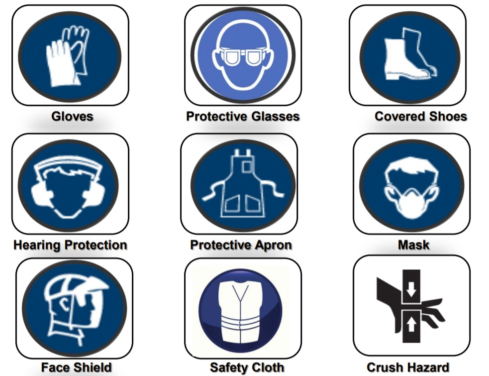
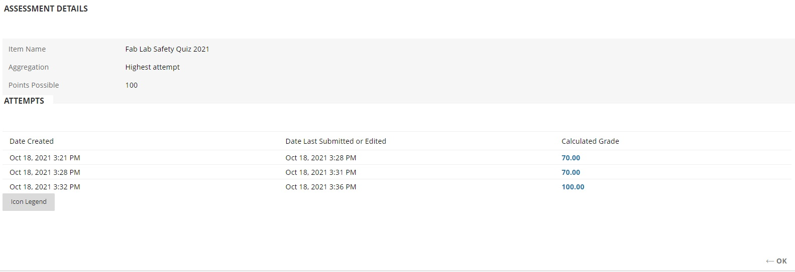

Safety is of extreme importance in many industries. However, there are still many occasions where safety procedures are overlooked, resulting in serious injuries or even death. We are reminded about the importance of safety in this module on the very first lesson to ensure that such incidents do not occur in the FabLab workshop. SP follows a SAFE framework, which stands for: SUPPORT/ACT/FACILITATE/EDUCATE, as well as WSH regulations. Here are some of the things we have learnt from this module:
There are various warning symbols and safety placards placed around the workshop to inform students on the type of hazards that come with the equipment. It is important to read this information before operating any machinery to ensure we are aware of the risks.
| Type of Hazard | Possible Injuries & Precautions to Take |
|---|---|
| Mechanical hazards | These are hazards caused by machinery motions. Some examples include crushing, cutting and entanglement hazards. These can result in serious injuries, such as the loss of body parts or excessive bleeding. Necessary precautions must be taken before operating the equipment. |
| Fall from height | Working at heights (eg. on a ladder) can result in falls which may lead to broken bones or even head injuries. Ladders should be held down by another person if possible. |
| Noise hazards | Machine operations can generate loud noises and prolonged exposure can be detrimental to one’s hearings. In order to prevent hearing loss, you should not be exposed to noise above 85 decibels for more than 8hrs a day. |
| Electrical hazards | Many of the equipment at the FabLab require electricity to function. In order to prevent any type of electrical hazard from occurring, it is important to not overload circuits, avoid water near outlets, and wear rubber protection if you need to be in close contact with wires or electrical outlets. |
| Heat related hazards | Many of the equipment at the FabLab produce heat when in use. Contact with hot surfaces may result in severe skin burns. It is important to take note of your surroundings and not come into contact with hot surfaces. |
| Fatigue | Overworking can cause a person to be tired and slow, negatively affecting their mental and physical performance. This may result in near-miss incidents or even injuries due to reduced concentration. It is important to take breaks and not operate equipment when you are not focused. |
| Chemical Hazards | Chemicals in the FabLab may include hydraulic fluids to operate mechanisms of machines, lubricants, and coolants. Coming into contact with some of these corrosive chemicals may result in skin burns or skin disorders from prolonged contact. It is important to avoid contact with such chemicals or wear the appropriate personal protective equipment if contact is necessary. |
Housekeeping is also an important part of safety that is often overlooked. Tools should be kept in their original locations, work surfaces should be clean and tidy, debris and chips should be cleared, and leftover materials should be brought to the recycle area. Good housekeeping helps to eliminate potential hazards and creates a safe workspace.
PPE helps to prevent or lessen the severity of accidents. Some examples include hard hats to prevent injury from falling objects, safety goggles to prevent debris from flying to eyes, earplugs to prevent hearing loss and coveralls to prevent chemical splashes.

Students are tasked with understanding the dangers of working in a workshop and the necessary precautions that have to be taken in order to stay safe. At the end of the lesson, we were tested using a quiz, under the FabLab Safety Program, to ensure our understanding of the topics we have learnt. Full marks were required to pass the quiz.
